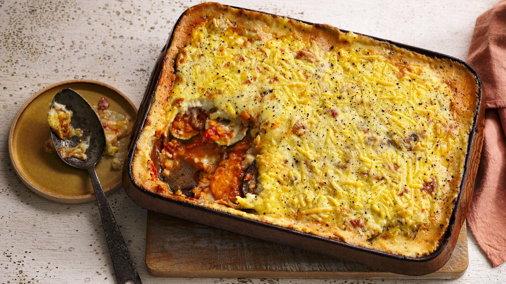

Vegan Moussaka

Disclaimer: This is not my recipe, for the original please see Rainbow Plant Life
Back To Recipes
Hearty and Wholesome
This vegan moussaka is perfect for a group feast on cold a evening
INGREDIENTS
Aubs and Pots
- Eggplant/Aubergine - 680g
- Kosher Salt
- Potatoes(Yukon gold works best but any will do) - 900g
- Olive oil - 6 Tbsp
- Dried Oregano - 2 1/2 tsp
- Garlic Cloves (minced/grated) - 3 cloves
- Blacked Pepper - freshly cracked
Meat Sauce
- Olive oil - 2 Tbsp
- Yellow Onion (chopped) - 1
- Garlic CLoves (minced/grated) - 4 cloves
- Cinnamon stick (or 1/4 tsp ground)- 1
- Fresh Thyme (or 1 tsp dried) - 1 Tbsp
- Ground Cloves - 1 pinch
- Red Pepper Flakes - 1/2 tsp (double for a kick, omit for mild)
- Tomato Paste - 3 Tbsp
- Vegan Ground Meat (impossible burger works well) - 340g-450g
- Cremini Mushrooms (or mushroom of choice) finely chopped - 227g
- Dry Red Wine - 1/3 Cup (80ml)
- Crushed Tomatoes (can) - 800g
- Kosher Salt - 1/2 tsp
- Bay leaf - 1
- Porcini Mushroom Powder - 1/2 tsp
- Fresh Basil or Parsley (chopped) - 1 large handful
Bachamel
- Raw Cashews (soaked overnight or quicksoaked) - 1 Cup (140g)
- Water - 420ml
- Fresh Nutmeg (grated) - 1/2 tsp
- Garlic Powder - 1/2 tsp
- Nutritional Yeast 1/2 Cup (40g)
- Kosher Salt - 3/4 tsp (more to taste)
- Vegan Butter (or extra virgin olive oil) - 4 Tbsp (56g)
- All-Purpose Flour - 1/3 Cup (42g)
Assembly
- Panko Bread Crumbs (optional for a crispy top) - 1/2 Cups (38g)
- Extra Virgin Olive Oil
- Flaky Sea Salt
- Fresh Basil or Parsley (chopped) - 1 handful
INSTRUCTIONS
Eggplant and Potatoes
- Slice off the stem of the eggplant. Slice the eggplant crosswise in half.
Now, slice each half thinly lengthwise, about ¼ inch thick (.6 cm).*
Transfer eggplant slices to a large colander and sprinkle with some salt. Toss to coat.
Allow to rest for 30 minutes. Pat the eggplant dry to remove excess moisture and salt. Transfer to a large bowl
- Preheat the oven to 425ºF/218ºC and arrange one oven rack in the bottom, one in the middle.
Line two rimmed sheet pans with parchment paper for easy cleanup and minimal sticking
(naked sheet pans are fine but only if well worn)
- Peel the potatoes and slice slightly thicker than the eggplant (1/3” or .8cm thick). Transfer to a sheet pan.
Toss with 2 tablespoons of the oil, 1 ½ teaspoons of oregano, and season with salt and pepper.
Spread the potatoes out on the pan without overlapping on top of each other
- In a large bowl, combine the eggplant with the grated garlic, remaining 1 teaspoon of oregano, and a generous amount of pepper,
and toss well. Add 2 tablespoons of the olive oil, and toss to coat the eggplant.
Add the remaining 2 tablespoons of oil and toss once again, ensuring all the eggplant is coated well.**
Transfer the eggplant to the other sheet pan (it's okay to slightly overlap and pile on top of each other)
- Roast both potatoes and eggplant in the oven for 30 minutes, until the eggplant is tender and lightly
browned and the potatoes are fork tender and lightly browned on the bottoms
Meat Sauce
- Heat the 2 tbsp oil in a deep saute pan over medium-high heat. Once hot, add the onions and season with a pinch of salt.
Cook until softened and golden, 8 to 10 minutes. Deglaze the pan as needed with a few spoons of water to prevent burning
Add garlic, cinnamon stick, thyme, cloves, chile flakes, and tomato paste, and cook for about 2 minutes, stirring frequently
- Add in the ground meat and break up with a wooden spoon. Cook until it's a bit browned, 2 to 3 minutes.
Then add the mushrooms and cook for 2 to 4 minutes
- Pour in the wine and deglaze the pan, scraping up any browned bits. Cook until the smell of alcohol burns off,
about 3 to 5 minutes
- Pour in the tomatoes, ½ teaspoon kosher salt, several cracks of pepper, bay leaf, and mushroom powder, if using.
Bring to a rapid bubble, then reduce the heat to a simmer. Simmer until the sauce thickens and the liquid has evaporated,
8 to 10 minutes, or until it looks like a thick meat sauce the liquid has evaporated
- Take off the heat, and remove bay leaf and cinnamon. Stir in basil. Taste, adding a pinch of sugar if needed to balance the acidity.
Season to taste with salt and pepper.
Bechamel
- If you haven't soaked the cashews overnight, add them to a saucepan, cover with water and bring to a boil.
Boil for 15 minutes, then drain and rinse
- Add the soaked and rinsed cashews to a high-powered blender with the water, nutmeg, garlic powder, nutritional yeast,
¾ teaspoon kosher salt, and several cracks of pepper. Blend on the highest speed for several minutes, until smooth and creamy and all
cashew bits have been pulverized, scraping down the sides as you go. The texture should be like a plant-based milk, not too thick
- Heat the butter in a small or medium saucepan over medium heat until foaming. Add the flour and whisk constantly for 1 to 2
minutes until a paste forms. Gradually pour in the cashew cream in stages, whisking after each addition to prevent clumping.
The texture should end up very thick and creamy. Take off the heat. Unless using immediately, transfer to a bowl to prevent
it from further thickening or hardening. Season to taste with more salt and pepper, as needed
Assembly
- Heat oven to 400ºF/204ºC. Lightly grease the bottom and sides of a 9x13” (23x33 cm) baking dish with olive oil.
Add the roasted potato slices on the bottom of the pan. Top with half of the meat sauce. Add the eggplant slices,
and then the rest of the meat sauce. Pour the bechamel sauce on top, spreading it to the edges.
Sprinkle the panko on top of the surface, drizzle with a bit of olive oil, and sprinkle a pinch of flaky salt on top
- Bake the moussaka until the bechamel is lightly browned in spots, about 35 minutes. If a browner surface is desired,
pop underneath the broiler for a minute (but keep a watchful eye, the panko will burn quickly)
- Allow to cool for at least 30 minutes before slicing, ideally for an hour or two (it sets up during this time and the flavors improve).
Sprinkle with fresh chopped basil if desired
Back to Recipes